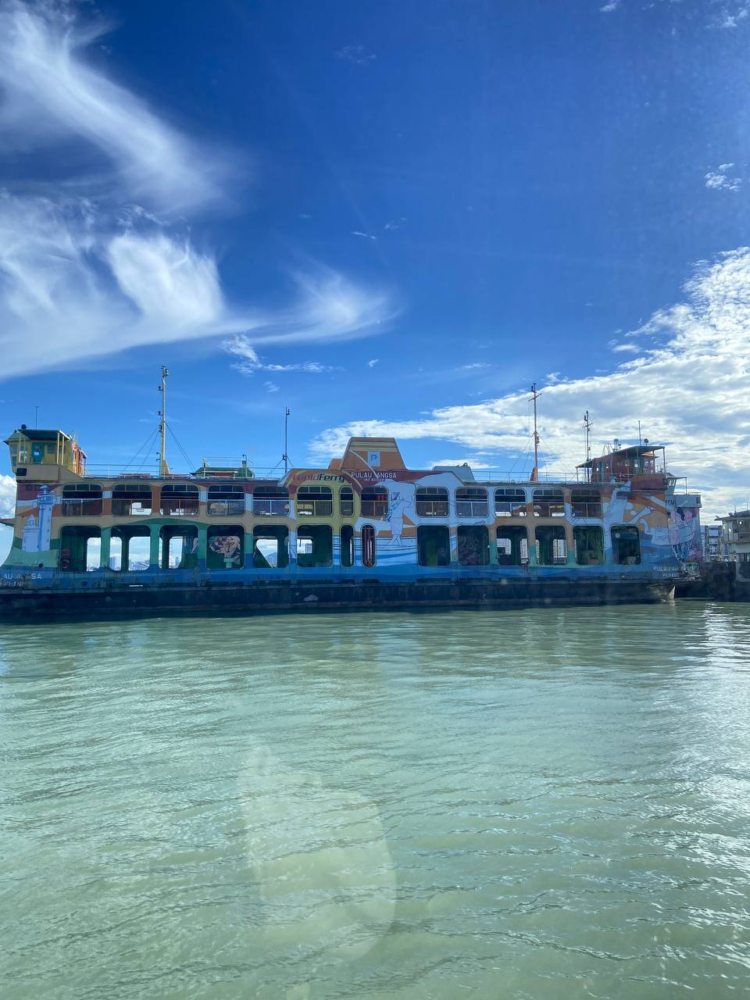

Sharing My Trip to Penang
Hey everyone! I had an amazing trip to Penang with my friends, and I wanted to share some highlights with you all.
In the morning, we headed to Penang Sentral to catch the ferry to the island. We took a public bus for transportation for the day. We spent our time exploring George Town, with our first stop being the Gurney Paragon Mall. We visited the Book Xcess on level 8, a great spot for any bookworm!
Our next destination was the Gurney Plaza Mall, where we enjoyed a delicious lunch at Port Pasta. Afterward, we explored the mall, taking our time to visit its various shops and attractions before heading to our next stop. We then made our way to Penang Street Art, a vibrant and Insta-worthy spot filled with creative murals. We couldn’t resist capturing countless photos and videos to remember the moment. Nearby, we also visited the Bomba Street Art, which was equally fascinating and brimming with charm.
Before returning to the ferry station, we stopped by a cozy restaurant called Color Port. It was the perfect place to unwind, enjoy the relaxing atmosphere, and take in the beautiful scenery of Penang. Overall, it was a wonderful experience traveling around Penang using public transportation. It allowed us to connect with the city in a unique way. I hope to create more memories like this with my friends in the future. That’s all from me for now—until next time, bye!